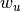

geographical_threshold_graph¶
- geographical_threshold_graph(n, theta, alpha=2, dim=2, pos=None, weight=None)[source]¶
Return a geographical threshold graph.
The geographical threshold graph model places n nodes uniformly at random in a rectangular domain. Each node is assigned a weight . Two nodes
 are connected with an edge if
are connected with an edge if
where
 is the Euclidean distance between and
is the Euclidean distance between and  ,
and
,
and  ,
,  are parameters.
are parameters.Parameters : n : int
Number of nodes
theta: float :
Threshold value
alpha: float, optional :
Exponent of distance function
dim : int, optional
Dimension of graph
pos : dict
Node positions as a dictionary of tuples keyed by node.
weight : dict
Node weights as a dictionary of numbers keyed by node.
Returns : Graph :
Notes
If weights are not specified they are assigned to nodes by drawing randomly from an the exponential distribution with rate parameter
 .
To specify a weights from a different distribution assign them to a
dictionary and pass it as the weight= keyword
.
To specify a weights from a different distribution assign them to a
dictionary and pass it as the weight= keyword>>> import random >>> n = 20 >>> w=dict((i,random.expovariate(5.0)) for i in range(n)) >>> G = nx.geographical_threshold_graph(20,50,weight=w)
If node positions are not specified they are randomly assigned from the uniform distribution.
References
[R263] Masuda, N., Miwa, H., Konno, N.: Geographical threshold graphs with small-world and scale-free properties. Physical Review E 71, 036108 (2005) [R264] Milan Bradonjić, Aric Hagberg and Allon G. Percus, Giant component and connectivity in geographical threshold graphs, in Algorithms and Models for the Web-Graph (WAW 2007), Antony Bonato and Fan Chung (Eds), pp. 209–216, 2007 Examples
>>> G = nx.geographical_threshold_graph(20,50)